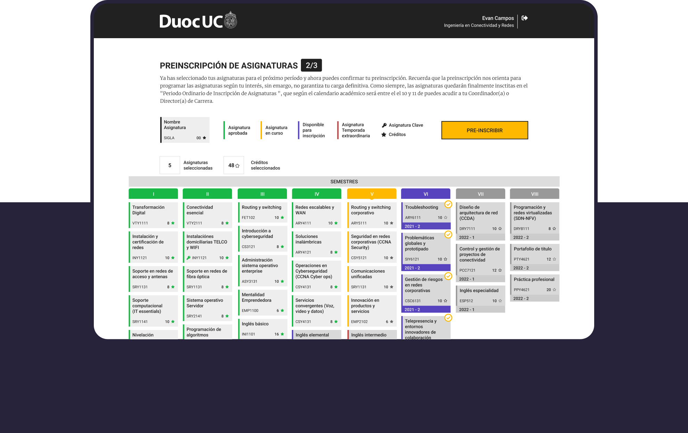

Plataforma donde los estudiantes puedan ver sus asignaturas cursadas, aprobadas, pendientes y el semestre correspondiente para preinscribir las necesarias para su progresión curricular en tres simples pasos.

La inscripción de asignaturas en línea es un proceso que presenta fricciones de usabilidad por parte de los estudiantes.
Diseñar una plataforma que permitirá visualizar con claridad qué asignaturas el estudiante ha cursado, ha aprobado, cuáles tienes que realizar y en qué semestre debe hacerlo. Se propone que en tres simples pasos las y los estudiantes puedan pre inscribir las asignaturas que les permitan su progresión curricular y así cumplir con el tiempo exacto de duración de su carrera.